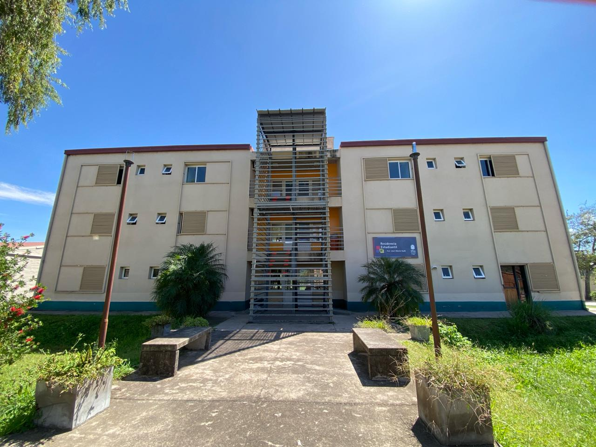
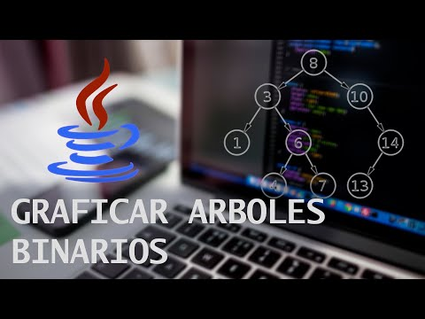

Sistema de Gestión de Albergues Universitarios

Esta plataforma permite centralizar la administración de plazas disponibles en los albergues de la UNJu, facilitando el proceso de inscripción y asignación para alumnos del interior de la provincia. Incluye un módulo de seguimiento para el mantenimiento de las instalaciones y la gestión de recursos básicos de cada unidad habitacional.
Albergues
Ver detalle
App de Tutorías entre Pares
Aplicación diseñada para fomentar el apoyo académico colaborativo entre estudiantes de la Facultad de Ingeniería. El sistema conecta de manera inteligente a alumnos avanzados con ingresantes que necesitan refuerzo en materias críticas, permitiendo programar encuentros virtuales o presenciales y compartir material de estudio digitalizado.
App
Ver detalle
Simulador de Planificación de Procesos

Herramienta interactiva orientada a la enseñanza de sistemas operativos, permitiendo a los usuarios cargar ráfagas de CPU y observar el comportamiento de distintos algoritmos de planificación. Visualiza mediante diagramas de Gantt cómo se ejecutan los procesos bajo políticas de prioridad, Round Robin o el algoritmo del primero en llegar.
Sistemas Operativos
Ver detalle
Visualizador de Árboles Binarios

Software didáctico que permite la representación gráfica y dinámica de estructuras de datos complejas. Los estudiantes pueden realizar operaciones de inserción y balanceo de nodos en tiempo real, facilitando la comprensión de los algoritmos de búsqueda y los diferentes tipos de recorridos como inorden, preorden y postorden.
Algoritmos
Ver detalle
Portal de Prácticas Profesionalizantes
Repositorio centralizado destinado a vincular a los alumnos de la carrera Analista Programador Universitario con el sector productivo local. Las empresas de la región pueden publicar sus ofertas de pasantías y los estudiantes tienen la posibilidad de cargar sus perfiles académicos para postularse a proyectos reales de desarrollo.
Practicas
Ver detalle